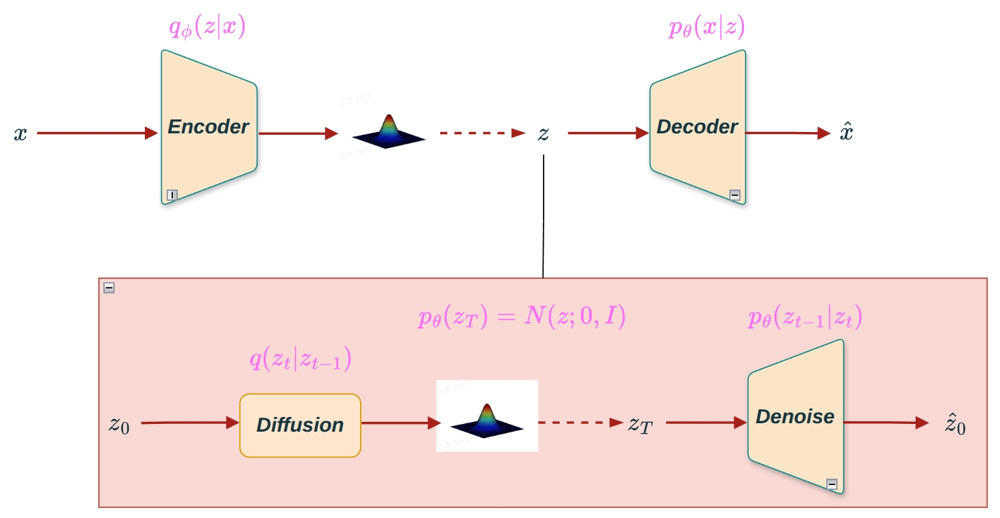
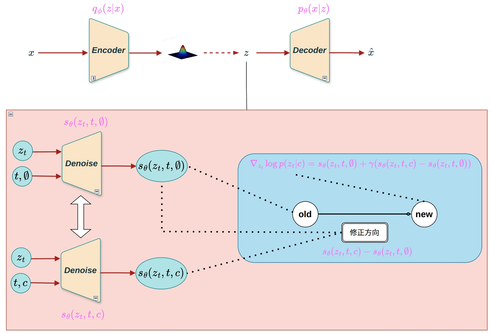
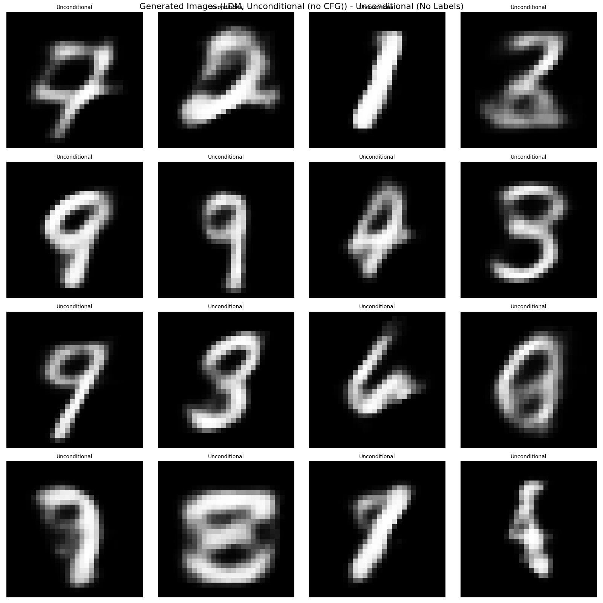
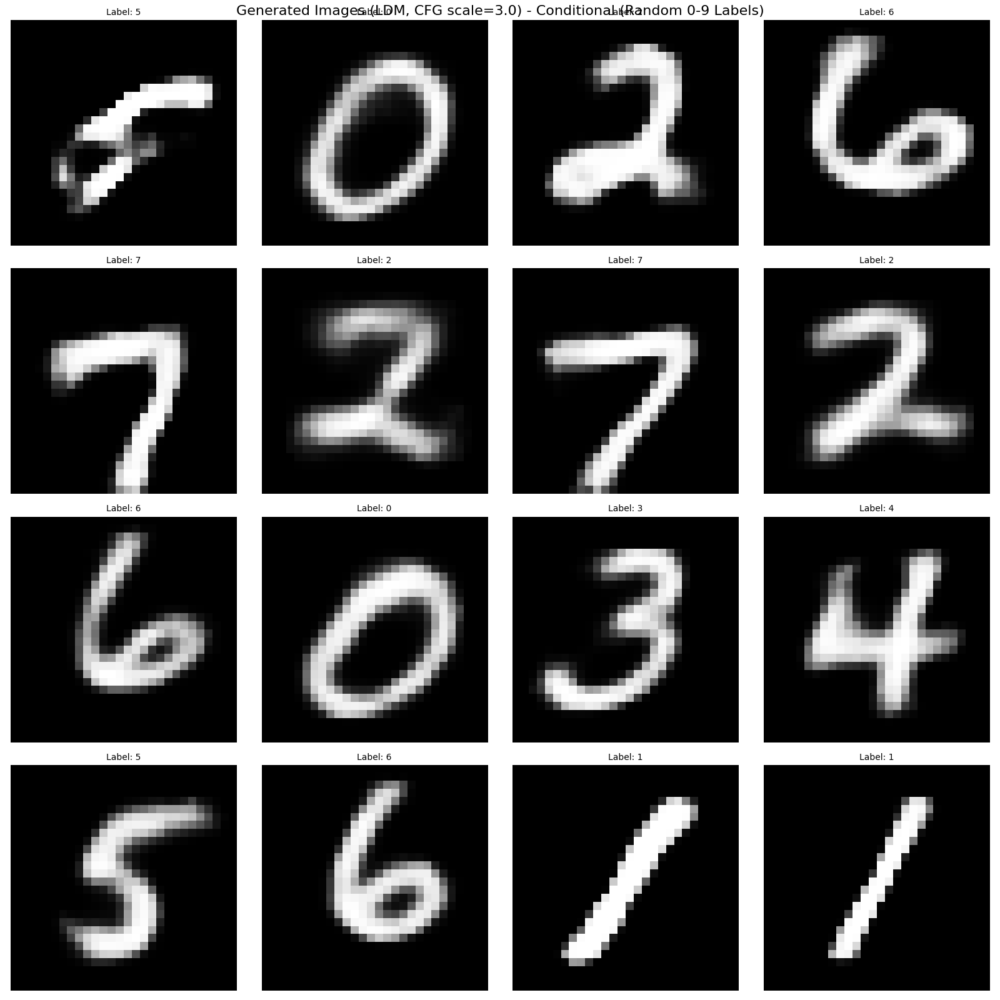

DDPM虽然在图像生成质量上取得了突破，但在高分辨率图像生成时面临计算成本高的问题。LDM（Latent Diffusion Model，潜在扩散模型）通过在潜在空间而非像素空间进行扩散，大幅降低了计算成本，同时保持了生成质量。LDM是Stable Diffusion等现代扩散模型的基础架构。本章将详细介绍LDM的基本原理和实现方法。
DDPM虽然能够生成高质量的图像，但在实际应用中存在以下问题:
LDM的核心思想是:在潜在空间（Latent Space）进行扩散，而不是在像素空间（Pixel Space）。
要点: - 图像的语义信息主要存在于低维潜在空间中 - 在潜在空间进行扩散可以大幅降低计算成本 - 通过VAE将图像编码到潜在空间，扩散后再解码回图像

图1 LDM架构图:通过VAE将图像编码到潜在空间，在潜在空间进行扩散，最后解码回图像。这种设计大幅降低了计算成本，同时保持了生成质量。
潜在空间（Latent Space）是数据的低维表示，包含了数据的主要语义信息。在LDM中:
优势: - 潜在空间维度远小于像素空间，计算成本大幅降低 - 潜在空间保留了图像的语义信息，生成质量不受影响
LDM使用VAE（Variational Autoencoder）在像素空间和潜在空间之间进行转换:
编码过程（图像 → 潜在向量）: \[z = \text{Encoder}(x)\]
其中:
解码过程（潜在向量 → 图像）: \[\hat{x} = \text{Decoder}(z)\]
其中 \(\hat{x}\) 是重构的图像。
LDM在潜在空间进行扩散，而不是在像素空间。LDM包含两个过程:diffusion（前向扩散）和denoise（反向去噪）。
前向扩散过程（Diffusion）（在潜在空间，训练时使用）: \[q(z_t|z_0) = \mathcal{N}(z_t; \sqrt{\bar{\alpha}_t}z_0, (1-\bar{\alpha}_t)I)\]
其中:
关键:训练时需要diffusion过程来向潜在向量添加噪声，生成训练样本 \((z_t, \epsilon, t)\)。
反向去噪过程（Denoise）（在潜在空间，推理时使用）: \[p_\theta(z_{t-1}|z_t) = \mathcal{N}(z_{t-1}; \mu_\theta(z_t, t), \Sigma_\theta(z_t, t))\]
其中 \(\mu_\theta\) 和 \(\Sigma_\theta\) 是神经网络预测的均值和方差。
关键:推理时只需要denoise过程，从随机噪声 \(z_T\) 逐步去噪生成 \(z_0\)。
LDM的完整生成流程包括三个阶段:
数学表示:
训练时（需要diffusion过程）: - 编码:\(z_0 = \text{Encoder}(x_0)\) - 前向扩散（Diffusion）:\(z_t = \sqrt{\bar{\alpha}_t}z_0 + \sqrt{1-\bar{\alpha}_t}\epsilon\)，其中 \(\epsilon \sim \mathcal{N}(0, I)\) - 预测噪声:\(\hat{\epsilon} = \epsilon_\theta(z_t, t)\) - 损失函数:\(\mathcal{L} = \|\epsilon - \hat{\epsilon}\|^2\)
推理时（只需要denoise过程）: - 采样:从 \(\mathcal{N}(0, I)\) 采样 \(z_T\)（纯噪声） - 反向去噪（Denoise）:\(z_{t-1} = \text{Denoise}(z_t, t)\)，逐步去噪 - 从 \(z_T \rightarrow z_{T-1} \rightarrow \cdots \rightarrow z_1 \rightarrow z_0\) - 解码:\(\hat{x} = \text{Decoder}(z_0)\)
总结: - 训练时:需要diffusion（前向扩散）来添加噪声，生成训练数据 - 推理时:只需要denoise（反向去噪）来生成图像，不需要diffusion过程
LDM采用两阶段训练策略:
阶段1:VAE训练 - 目标:学习图像和潜在空间之间的映射 - 损失:重构损失 + KL散度损失 - 输出:训练好的编码器和解码器
阶段2:扩散模型训练 - 目标:在潜在空间学习扩散过程 - 损失:噪声预测损失 - 输入:使用训练好的VAE编码器将图像编码到潜在空间
在潜在空间进行扩散的主要优势:
在条件生成任务中，如何让模型更好地遵循条件信息是一个关键问题。Classifier-Free Guidance（CFG）是一种无需额外分类器的引导方法，通过在训练时同时学习条件生成和无条件生成，在推理时通过引导强度参数控制条件的影响程度。这种方法简单有效，被广泛应用于LDM等扩散模型中。
LDM通常结合Classifier-Free Guidance（CFG）来增强条件控制:

图2 LDM + CFG架构图:展示了LDM结合Classifier-Free Guidance的完整架构。在训练时，模型同时学习条件生成（有标签）和无条件生成（无标签，通过随机丢弃条件实现）。在推理时，通过CFG公式结合条件预测和无条件预测，并通过引导强度参数\(\gamma\)控制条件的影响程度，从而实现更精确的条件控制。
CFG原理: - 同时训练条件模型和无条件模型 - 推理时通过引导强度 \(\gamma\) 控制条件影响
CFG公式: \[\hat{\epsilon} = \epsilon_\text{uncond} + \gamma \cdot (\epsilon_\text{cond} - \epsilon_\text{uncond})\]
其中:
训练策略: - 训练时随机丢弃条件（如10%概率将标签设为None） - 这样模型同时学习条件生成和无条件生成
本代码实现LDM + CFG，即无分类器引导的潜在空间扩散模型。
首先实现VAE，用于图像和潜在空间之间的转换:
import torch
import torch.nn as nn
import torch.nn.functional as F
class Encoder(nn.Module):
"""VAE 编码器:将图像编码到潜在空间"""
def __init__(self, input_dim, hidden_dim, latent_dim):
super().__init__()
self.linear = nn.Linear(input_dim, hidden_dim)
self.linear_mu = nn.Linear(hidden_dim, latent_dim)
self.linear_logvar = nn.Linear(hidden_dim, latent_dim)
def forward(self, x):
# x: [B, C, H, W] -> [B, C*H*W]
B = x.shape[0]
x_flat = x.view(B, -1)
h = F.relu(self.linear(x_flat))
mu = self.linear_mu(h)
logvar = self.linear_logvar(h)
sigma = torch.exp(0.5 * logvar)
return mu, sigma
class Decoder(nn.Module):
"""VAE 解码器:将潜在向量解码回图像"""
def __init__(self, latent_dim, hidden_dim, output_dim):
super().__init__()
self.linear1 = nn.Linear(latent_dim, hidden_dim)
self.linear2 = nn.Linear(hidden_dim, output_dim)
def forward(self, z):
h = self.linear1(z)
h = F.relu(h)
h = self.linear2(h)
x_hat = torch.sigmoid(h)
return x_hat
class VAE(nn.Module):
"""VAE 模型:用于图像和潜在空间之间的转换"""
def __init__(self, input_dim, output_dim, hidden_dim, latent_dim):
super().__init__()
self.encoder = Encoder(input_dim, hidden_dim, latent_dim)
self.decoder = Decoder(latent_dim, hidden_dim, output_dim)
self.latent_dim = latent_dim
def encode(self, x):
"""编码:图像 -> 潜在向量"""
mu, sigma = self.encoder(x)
# 重参数化技巧
epsilon = torch.randn_like(sigma)
z = mu + sigma * epsilon
return z, mu, sigma
def decode(self, z):
"""解码:潜在向量 -> 图像"""
return self.decoder(z)
def forward(self, x):
"""前向传播:编码 -> 解码"""
z, mu, sigma = self.encode(x)
x_hat = self.decode(z)
return x_hat, mu, sigmaVAE损失函数: \[\mathcal{L}_\text{VAE} = \text{重构损失} + \beta \cdot \text{KL散度}\]
其中:
实现潜在空间的扩散过程:
import torch
from tqdm import tqdm
class LatentDiffuser:
"""Latent Diffusion Model (LDM) with Classifier-Free Guidance (CFG)"""
def __init__(self, num_timesteps=1000, beta_start=0.0001, beta_end=0.02, device='cpu'):
self.num_timesteps = num_timesteps
self.device = device
self.betas = torch.linspace(beta_start, beta_end, num_timesteps, device=device)
self.alphas = 1 - self.betas
self.alpha_bars = torch.cumprod(self.alphas, dim=0)
def diffusion(self, z_0, t):
"""前向扩散过程:向潜在向量添加噪声"""
T = self.num_timesteps
assert (t >= 1).all() and (t <= T).all()
t_idx = t - 1
alpha_bar = self.alpha_bars[t_idx].view(-1, 1)
noise = torch.randn_like(z_0, device=self.device)
z_t = torch.sqrt(alpha_bar) * z_0 + torch.sqrt(1 - alpha_bar) * noise
return z_t, noise
def denoise(self, model, z, t, labels=None, guidance_scale=3.0):
"""反向去噪过程:使用 Classifier-Free Guidance"""
T = self.num_timesteps
assert (t >= 1).all() and (t <= T).all()
t_idx = t - 1
alpha = self.alphas[t_idx].view(-1, 1)
alpha_bar = self.alpha_bars[t_idx].view(-1, 1)
alpha_bar_prev = self.alpha_bars[t_idx-1].view(-1, 1)
model.eval()
with torch.no_grad():
# CFG: 同时计算条件预测和无条件预测
eps_cond = model(z, t, labels) # 条件预测
eps_uncond = model(z, t, None) # 无条件预测
# CFG 公式
eps = eps_uncond + guidance_scale * (eps_cond - eps_uncond)
model.train()
noise = torch.randn_like(z, device=self.device)
noise[t == 1] = 0 # 最后一步不加噪声
mu = (z - ((1-alpha) / torch.sqrt(1-alpha_bar)) * eps) / torch.sqrt(alpha)
std = torch.sqrt((1-alpha) * (1-alpha_bar_prev) / (1-alpha_bar))
return mu + noise * std
def sample(self, model, z_shape, labels=None, guidance_scale=3.0):
"""从随机噪声生成潜在向量（使用 Classifier-Free Guidance）
Args:
model: UNet 模型
z_shape: 潜在向量的形状 (batch_size, latent_dim)
labels: 可选的条件标签，如果为None则进行无条件生成（不使用CFG）
guidance_scale: CFG 引导强度（gamma），默认3.0
"""
batch_size = z_shape[0]
z = torch.randn(z_shape, device=self.device)
# 如果labels=None，直接传递None给denoise，进行无条件生成
# 在denoise中，当labels=None时，eps_cond = model(z, t, None) = eps_uncond
# 所以 eps = eps_uncond + gamma * (eps_cond - eps_uncond) = eps_uncond
# 即CFG不起作用，完全使用无条件预测
for i in tqdm(range(self.num_timesteps, 0, -1), desc='Sampling (LDM+CFG)'):
t = torch.tensor([i] * batch_size, device=self.device, dtype=torch.long)
z = self.denoise(model, z, t, labels, guidance_scale=guidance_scale)
return z, labels阶段1:VAE训练
# VAE训练
for epoch in range(vae_epochs):
for images, _ in train_loader:
optimizer.zero_grad()
x = images.to(device)
x_flat = x.view(x.shape[0], -1) # [B, C, H, W] -> [B, C*H*W]
# 前向传播
x_hat, mu, sigma = vae(x_flat)
# 计算损失
recon_loss = F.mse_loss(x_hat, x_flat)
kl_loss = -0.5 * torch.sum(1 + torch.log(sigma**2) - mu**2 - sigma**2)
loss = recon_loss + beta * kl_loss
# 反向传播
loss.backward()
optimizer.step()阶段2:LDM训练
# LDM训练（在潜在空间）
for epoch in range(ldm_epochs):
for images, labels in train_loader:
optimizer.zero_grad()
x = images.to(device)
labels = labels.to(device)
t = torch.randint(1, num_timesteps+1, (len(x),), device=device)
# CFG训练:随机丢弃条件（10%概率）
if np.random.random() < cond_dropout_prob:
labels = None
# 将图像编码到潜在空间
x_flat = x.view(x.shape[0], -1)
with torch.no_grad():
z_0, _, _ = vae.encode(x_flat) # [B, latent_dim]
# 在潜在空间进行扩散
z_noisy, noise = diffuser.diffusion(z_0, t)
noise_pred = model(z_noisy, t, labels) # 传入labels（可能为None）
loss = F.mse_loss(noise, noise_pred)
loss.backward()
optimizer.step()# 推理生成
def generate_images(model, vae, diffuser, num_images=16, labels=None, guidance_scale=3.0):
"""生成图像
Args:
model: UNet模型
vae: VAE模型
diffuser: LatentDiffuser实例
num_images: 生成图像数量
labels: 条件标签，如果为None则随机生成（MNIST: 0-9）
guidance_scale: CFG引导强度，默认3.0
"""
# 1. 在潜在空间采样（使用CFG）
z_shape = (num_images, latent_dim)
z_0, labels = diffuser.sample(
model, z_shape, labels=labels, guidance_scale=guidance_scale
)
# 2. 解码到图像空间
with torch.no_grad():
z_0_flat = z_0.view(num_images, -1)
x_hat_flat = vae.decode(z_0_flat) # [B, latent_dim] -> [B, C*H*W]
x_hat = x_hat_flat.view(num_images, C, H, W)
return x_hat, labels图3给出了LDM无条件生成的结果，图4给出了LDM + CFG条件生成的结果。

图3 LDM无条件生成结果（labels=None，不使用CFG）

图4 LDM + CFG条件生成结果（随机0-9标签，使用CFG引导）
无条件生成（图3）: - 使用 labels=None，完全依赖无条件预测 model(z, t, None) - CFG不起作用（因为条件预测和无条件预测相同） - 生成的图像类别完全随机，无法控制生成内容 - 适合随机生成、数据增强等场景
条件生成（图4）: - 使用随机生成的0-9标签，结合CFG进行条件引导 - CFG公式:\(\epsilon = \epsilon_\text{uncond} + \gamma \cdot (\epsilon_\text{cond} - \epsilon_\text{uncond})\) - 生成的图像类别与指定标签高度一致 - 通过调整 guidance_scale（\(\gamma\)）可以控制条件影响强度
关键结论:
LDM在潜在空间生成质量优秀:即使在低维潜在空间（16维）进行扩散，生成的图像质量仍然很高，证明了潜在空间的有效性
CFG显著提升条件控制能力:对比图3和图4可以看出，CFG使得模型能够根据条件标签生成对应类别的图像，实现了精确的条件控制
计算效率大幅提升:在潜在空间（16维）进行扩散，相比像素空间（784维）计算量降低约49倍
无条件与条件生成互补:无条件生成提供多样性，条件生成提供可控性，两者结合使得LDM在实际应用中更加灵活
LDM的主要优势是计算效率:
LDM可以轻松扩展到高分辨率:
结合CFG，LDM实现了强大的条件控制:
Stable Diffusion是LDM最著名的应用:
LDM还被应用于: